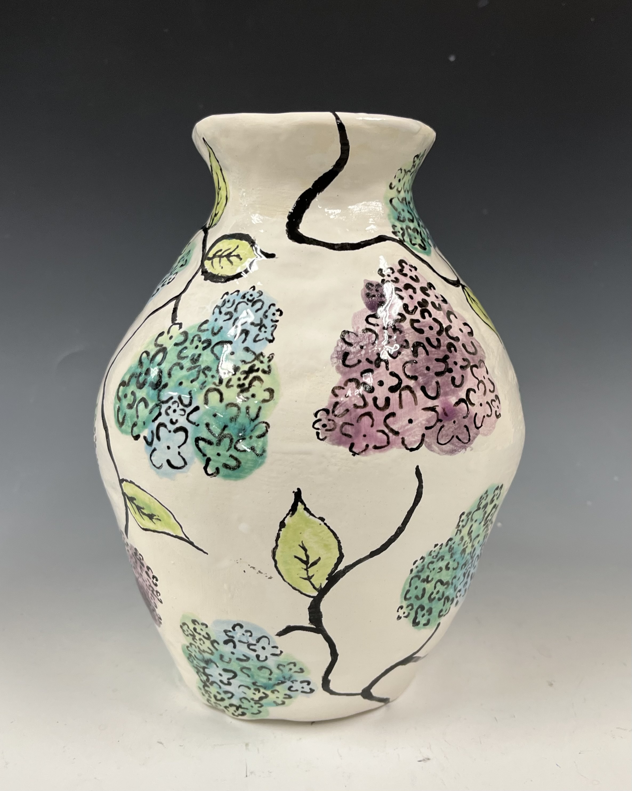
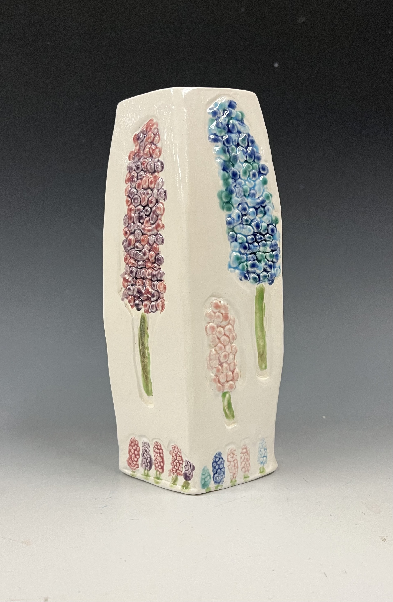
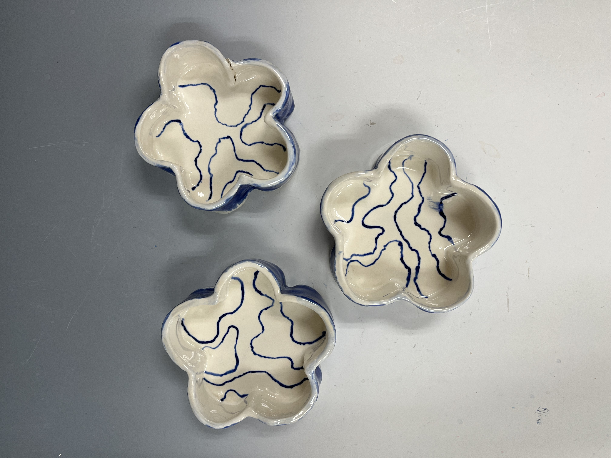
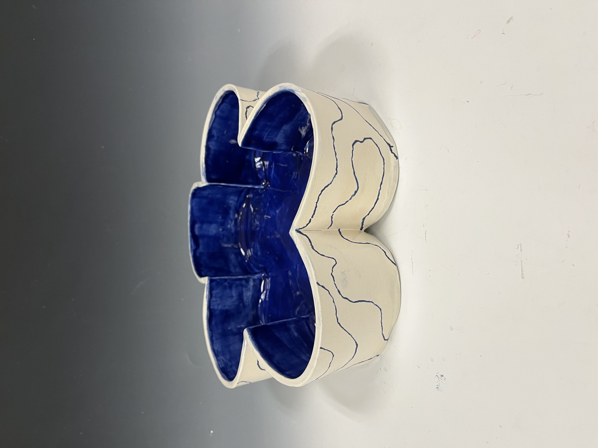
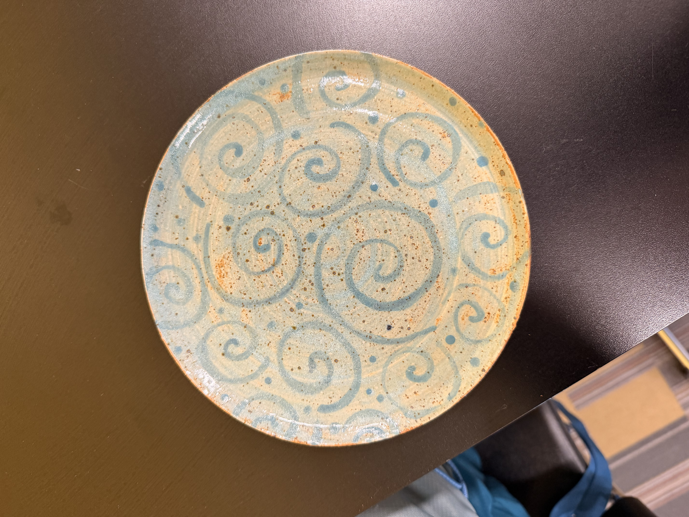
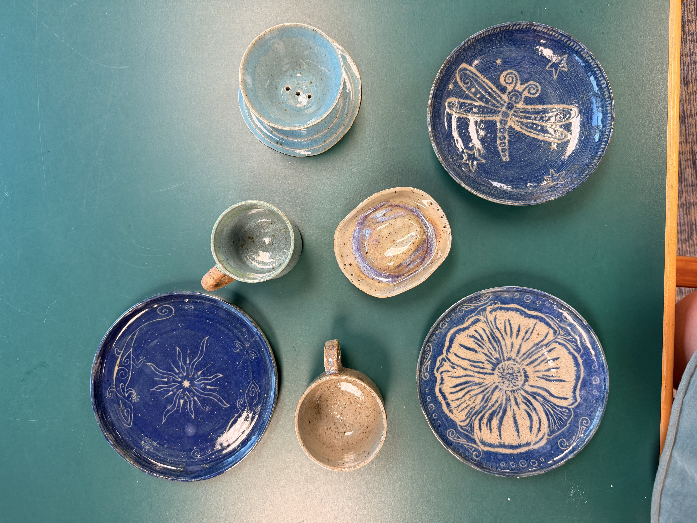

Left: Hydrangea inspired vase, stoneware, 2023. Right: Lupine Miss Rumphius inspired vase, stoneware, 2024.


Matching set! Left: Small oriental-inspired 'dip' bowls, stoneware, 2022. Right: Large oriental-inspired 'chip' bowl, stoneware, 2022.


Left: Turquoise Spiral Plate, stoneware, 2026. Right: A collection of pottery from last semester, stoneware, 2026.